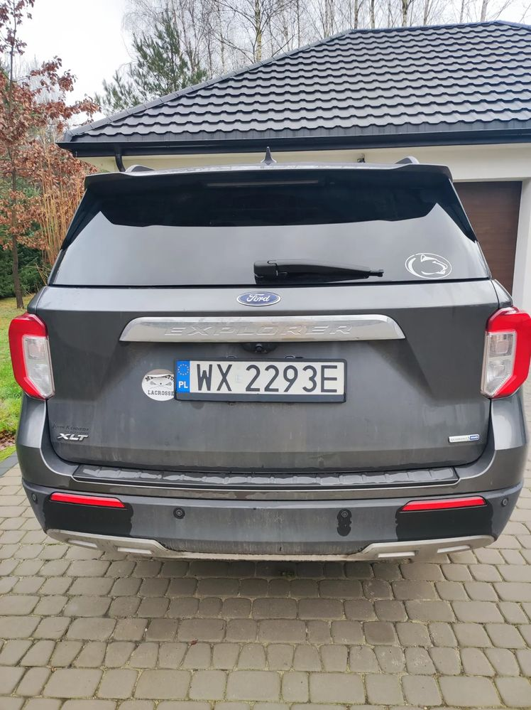
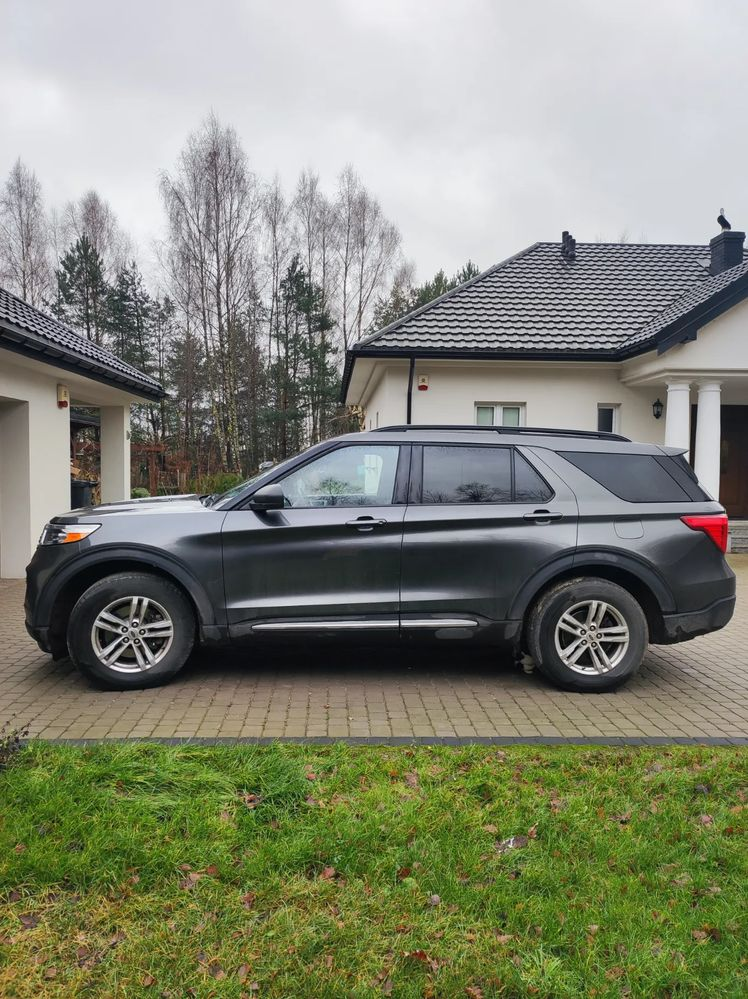
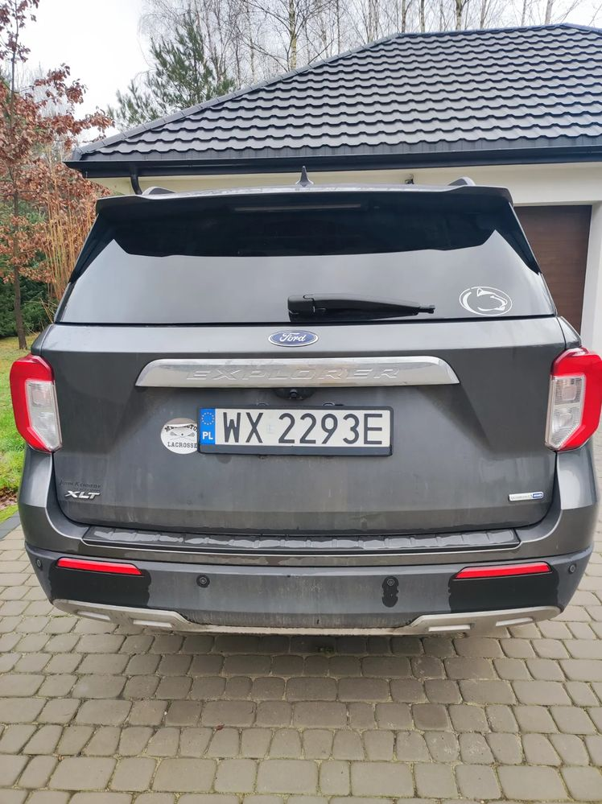
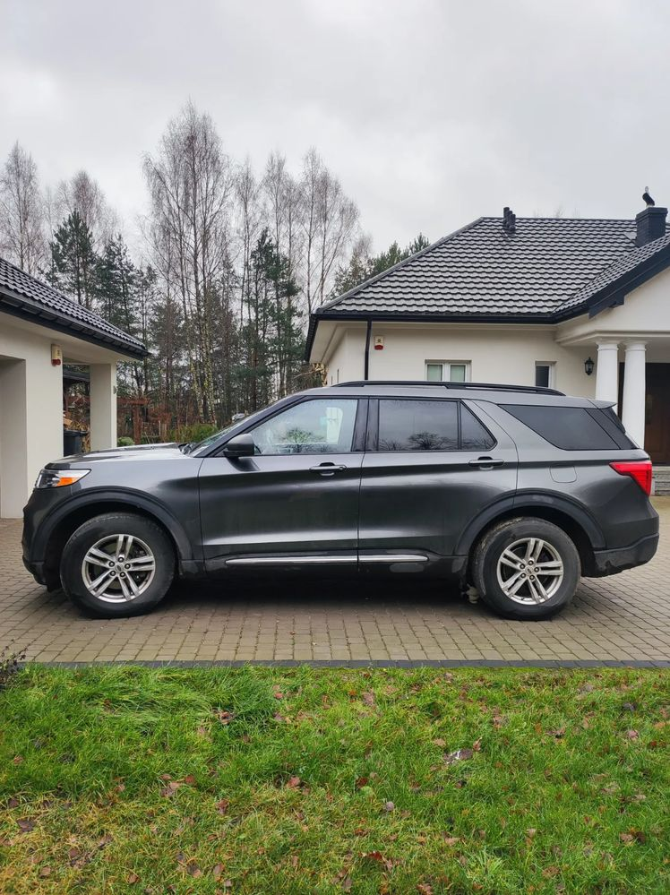

Samochód jest sprzedawany przez osobę, która sprowadziła go z USA i użytkowała do dnia dzisiejszego. Pierwsza rejestracja w Polsce to listopad 2021r. Był użytkowany jako drugi samochód, dlatego ma niewielki przebieg (sprowadzony z USA z przebiegiem 19 tys. km). Wersja XLT. Dane techniczne są opisane w polach wyboru przy zamieszczaniu ogłoszenia. Dodam tylko, że auto ma panoramiczny szyber dach i nie ma żadnych usterek technicznych. Stan bardzo dobry, jak widać na zdjęciach. Zdjęcia z aukcji w USA mogę udostępnić.
 
